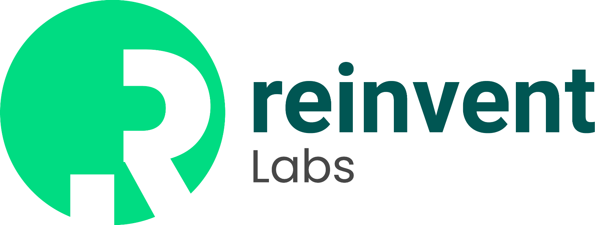

Des agents qui
s’améliorent en travaillant
Comment une IA continue d’apprendre après sa mise en service, à travers un cas concret.
À propos de l’intervenant
Chercheur en IA à KoreaTech, avec un focus sur les systèmes de mémoire pour agents IA.
Salomon Diei
- 1Master en Computer Engineering à KoreaTech travaux en NLP, LLMs et agents IA
- 2Recherche principale mémoire long terme, continual learning et amélioration post-déploiement des agents
- 3Objectif de cette masterclass montrer comment l’expérience peut devenir une meilleure décision future

Mon site
Profil, travaux, projets, publications et points de contact.
Comment on est arrivé ici
Les LLM modernes sont le résultat d’une succession d’avancées — architecture, échelle, alignement et interface.
Transformer
Self-attention et entraînement massivement parallélisable.
Pré-entraînement à grande échelle
Des modèles plus gros apprennent des régularités sur d’immenses corpus.
Instruction tuning + RLHF
Les modèles deviennent beaucoup meilleurs pour suivre l’intention utilisateur.
ChatGPT
Le langage naturel devient une interface universelle vers le modèle.
Outils + multimodalité + raisonnement
Les modèles commencent à agir dans des systèmes réels.
Un LLM reste d’abord un modèle de prédiction
À l’inférence, il transforme une séquence de tokens en une distribution sur le token suivant.
Pipeline simplifié
Ce que cela donne à grande échelle
Un LLM seul ne peut pas agir dans le monde
Le modèle peut proposer une action. Un système externe doit lui donner des moyens de l’exécuter.
Sans système autour de lui
Qu’est-ce qu’un agent ?
Un système piloté par un LLM qui sélectionne et exécute des actions via des outils pour atteindre un objectif.
L’agent est le système complet.
Architecture d’un agent
L’agent est le système complet : LLM, mémoire et outils, qui agit sur un environnement.
Point clé : la tâche entre dans l’agent. L’agent contient ses composants internes, puis agit vers un environnement externe et récupère des résultats.
L’agenticité est un continuum
On ne passe pas d’un coup de « simple chat » à « agent autonome ». L’autonomie augmente progressivement.
Les capacités agentiques sont déjà dans les produits courants
ChatGPT, Claude et d’autres assistants combinent déjà recherche, fichiers, code et applications.
Ce qu’ils savent déjà faire
- 1Rechercher sur le web et dans des bases de connaissance
- 2Manipuler des fichiers PDF, tableurs, documents, images
- 3Exécuter du code analyser, transformer, tester, calculer
- 4Utiliser des apps API, connecteurs, systèmes métier
Pourquoi un agent doit-il continuer à apprendre ?
Le monde change après le déploiement. Les tâches, les utilisateurs et les procédures changent aussi.
Ce qui évolue réellement
- +Nouveaux cas le modèle n’a pas vu toutes les situations au moment de l’entraînement
- +Nouvelles règles politiques, procédures, outils, formats, données
- +Feedback humain corrections, validations, préférences, exceptions
- +Distribution shift ce qui fonctionnait hier peut devenir faux demain
Qu’est-ce que « continuer à apprendre » ?
Une expérience passée change le comportement de l’agent lors des tâches futures.
Idée simple
- 1Une tâche produit une action et un résultat dans le monde
- 2La mémoire est mise à jour si cette expérience est jugée utile
- 3La tâche suivante réutilise cela pour prendre une meilleure décision
Paramétrique vs non paramétrique
Deux grandes manières de continuer à apprendre après le déploiement.
Différence fondamentale
- PParamétrique on modifie les poids du modèle : fine-tuning, réentraînement, adaptation plus lourde
- NPNon paramétrique on garde le modèle, mais on met à jour une mémoire ou une base externe
- ✓En pratique pour les agents la mémoire externe est souvent la voie la plus accessible
Une mémoire utile n’est pas un historique de chat
Elle doit distinguer ce qui est temporaire, ce qui s’est passé, ce qui est vrai et comment agir.
Mémoire de travail
État de la tâche actuelle : objectifs, observations, variables intermédiaires.
Mémoire épisodique
Trajectoires et expériences spécifiques passées.
Mémoire sémantique
Faits, règles et connaissances consolidées.
Mémoire procédurale
Procédures, stratégies ou skills réutilisables.
Un agent qui apprend en travaillant
Le travail produit de l’expérience. L’expérience modifie l’apprentissage. L’apprentissage améliore le travail suivant.
→ apprentissage réutilisable
Dans cette boucle, l’agent agit dans un environnement, obtient un résultat, puis transforme ce résultat en apprentissage réutilisable.
Comment une expérience devient-elle une connaissance ?
Toutes les interactions ne méritent pas de devenir de la mémoire utile.
Ce qu’on évalue
- 1Résultat succès, échec, score, validation
- 2Feedback retour du monde ou d’un humain
- 3Répétition une règle devient plus crédible si elle se répète
- 4Contexte une règle peut être locale à une situation précise
Un agent de support qui apprend de ses résultats
Même modèle. Même outils. La différence vient de ce que le système conserve et réutilise.
Premier cas
Mémoire structurée
Cas suivant
Mémoire ≠ apprentissage
Le système devient meilleur seulement si les bonnes expériences influencent les bonnes décisions.
Ce qui fonctionne mieux
Ce qui casse le système
De l’intelligence statique à l’expérience accumulée
Accéder aux slides
Scannez ce QR code pour retrouver cette présentation en ligne.

Slides IMPACT IA
Version en ligne de la masterclass, accessible depuis votre téléphone.
Ce que vous y retrouverez
- •Les concepts clés LLM, agent, mémoire et continual learning
- •Les schémas utilisés architecture, continuum, apprentissage et mémoire
- •Les liens utiles site personnel, entreprise et références principales
Questions & discussion
Mémoire · continual learning · architectures agentiques · évaluation · cas d’usage
Continuer la conversation
Scannez pour découvrir nos projets, nos travaux et nos offres autour des agents IA.

Reinvent Labs
Recherche appliquée, produits et ingénierie autour des systèmes agentiques.
Ce que nous construisons
- 1Agentic engineering conception d’agents fiables, observables et utiles
- 2Mémoire & apprentissage systèmes qui améliorent leurs décisions en travaillant
- 3Produits et accompagnement cas d’usage réels, formation et déploiement
Références principales
Sources utilisées pour structurer la partie technique et la taxonomie de la masterclass.